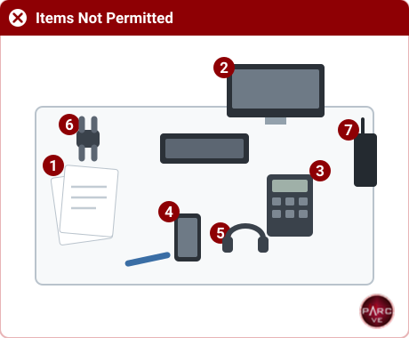
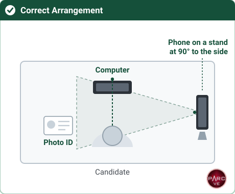
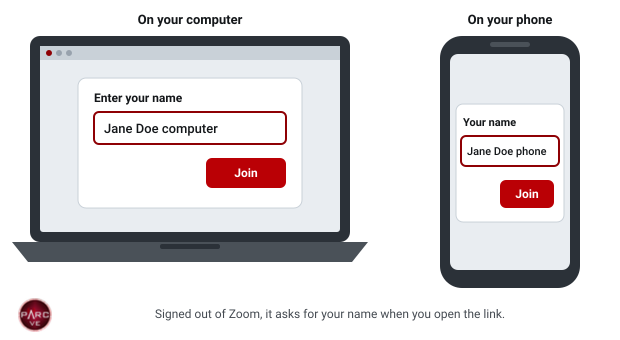
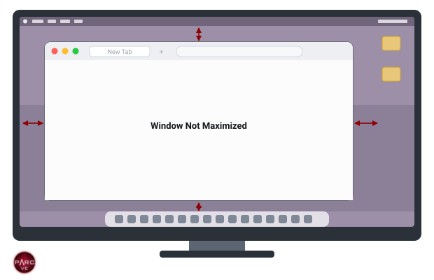
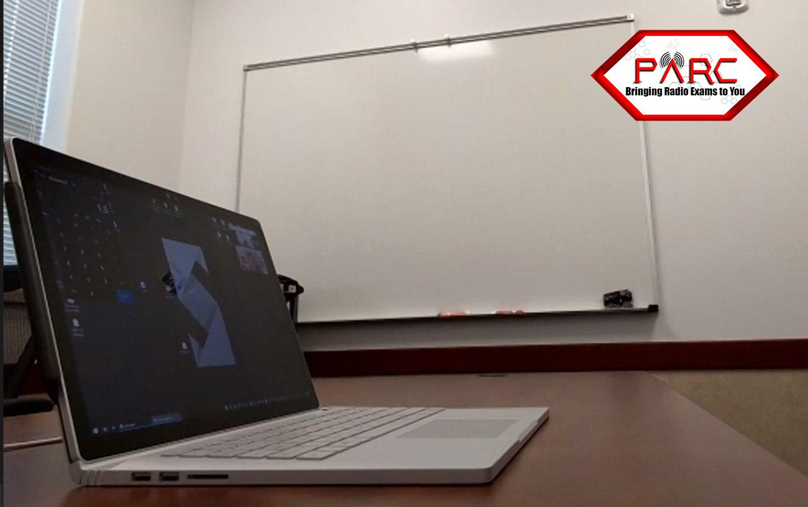
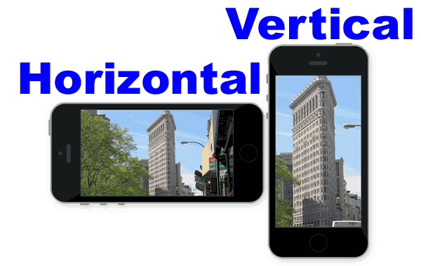
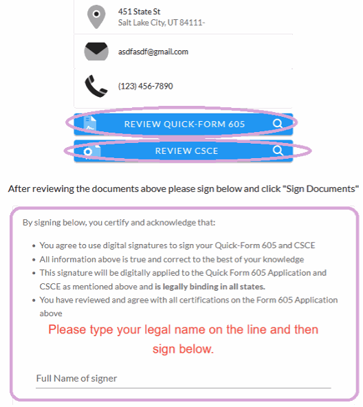
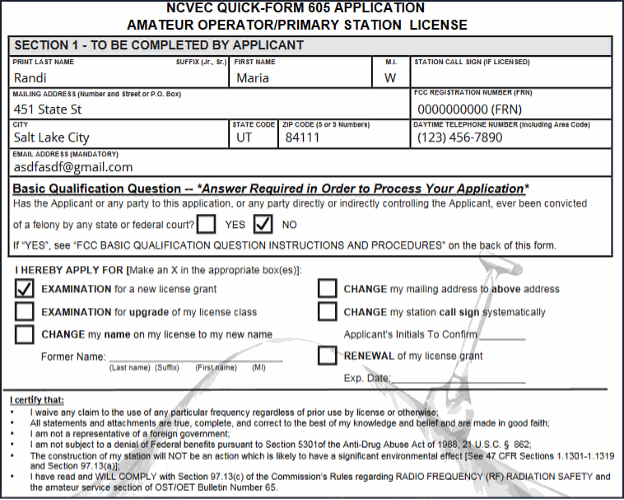
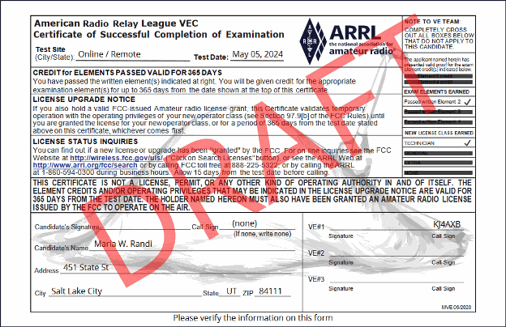

Online exam instructions
How would you like your instructions?
New to online exams? Read the short overview first.
Prefer a checklist? The same requirements as a list you can tick off and print.
Before you book an online exam
Online exams are supervised live over Zoom by a team of at least three volunteer examiners, one candidate at a time. The rules are strict so that every result can be trusted. PARC has permission from the ARRL VEC and the FCC to run them this way.
What an online exam involves
- Two devices with cameras, both on Zoom for the whole session: a Windows or Mac computer for the exam, and a phone or tablet beside you that shows you, your hands and your screen.
- A private, quiet room with a door you can close and nobody else in it.
- A room scan and a recording. You show the whole room with your phone camera, and the session is recorded. Cover or remove anything you would rather not show.
- An FRN from the FCC before you book, ideally registered with an email address that is not Gmail. The FCC’s fee email often never reaches Gmail.
- A physical photo ID from the accepted list.
Not comfortable with a room scan and a recording, or unable to meet one of these? An in-person session may suit you better.
Come prepared. If you are brought in and you are not ready, you go back to the waiting room and the next candidate goes ahead. If it happens again, you will need to book a new exam.
Where and how to study
Book your exam once you consistently score 85% or higher on at least 15 practice tests. Each session uses volunteers’ time and a slot another candidate could have had, so please be ready.
Practice tests and classes
- HamStudy.org — free practice tests and a study mode that tracks what you know, with an inexpensive app for studying on the go.
- ARRL Exam Review for Ham Radio™ — free practice exams from the ARRL, the national association for amateur radio.
- New England Sci-Tech — online license classes, and the ones our examiners recommend.
How to book, pay and register
Everyone books the same way. What differs is anything you need to arrange first, so check your situation at the bottom of this page before you book.
1. Book and pay
- Pick a time on the schedule. The $15 exam fee is paid by card as part of booking. There is no separate payment step.
- Use the same email address to book, pay and register. A different address is the most common reason a booking cannot be matched to its payment.
- The fee is forwarded to the ARRL VEC, so it cannot be refunded: not for a missed exam, an equipment problem or any other reason.
- Did not pass? You can book another time, even the same day. Each attempt is $15.
2. Register
- Within 48 hours of booking, an email from vetesting@yahoo.com brings a link to your exam session. Registrations go out once a day, so if you booked for tomorrow, keep checking, including spam and junk.
- Complete the registration as soon as it arrives. It is your license application (FCC Form 605), and you cannot be admitted to the exam without it. Enter your name exactly as it appears on your photo ID.
- Upgrading? Before you register, email a copy of your current license, or any CSCE from an earlier session, to vetesting@yahoo.com as a PDF.
- The felony question. The application asks the FCC’s basic qualification question. If you answer yes, send the required documents directly to the FCC within 14 days of the filing date, quoting your application file number, as the ARRL explains. Otherwise the FCC dismisses the application. Do not send anything to us or the VEC.
Your address will be public
Your name and mailing address become public when your license is issued. Phone numbers, email addresses and Social Security numbers are never published (details). To use a PO Box on your application, email your physical address to vetesting@yahoo.com before you register, with the subject line “Physical Address for Non-Public Record Only”, and say why.
Your situation
One exam
One exam element in one sitting. This is what most candidates book, and nothing extra is needed.
Book a single time slot on the schedule. If you pass and want to try the next element the same day, ask your examiner during the session. There is only room if the slots around yours are free.
Two or three exams in one sitting
Two or three elements back to back in one session: Technician and General on the same day, for example.
This must be arranged before you book. Each Zoom session has to serve as many candidates as possible, and a candidate taking three elements uses slots that others are waiting for. It is possible when your practice scores show you are ready, there is time for each element, and back-to-back slots are free that day.
More than one candidate in the same building
Two or more people testing from the same house or building.
Each candidate needs their own booking, their own computer, their own second device and their own room. You cannot share a screen, a desk or a space: the room scan and camera rules apply to each person separately, exactly as if you were testing alone.
Slots at the same time are fine, as long as each candidate meets those requirements.
Accommodations
If a disability means the standard exam procedure needs adjusting, we will work with you.
Any change to the standard procedure needs permission in advance. Some adjustments need a different session type or an extra examiner, and that cannot be arranged on exam day. For example, an examiner can read each question aloud, up to twice, during an online exam.
See also accessible testing and HandiHam, which covers the wider support available to licensed and prospective hams with disabilities.
Acceptable identification
You show your ID to the camera, front and back, until every examiner can read it. Bring the physical card. Mobile or digital IDs, photos and copies are not accepted.
Adults
One unexpired photo ID from this list:
- State-issued driver’s license
- State-issued photo ID card
- US passport. Passports from other countries are not accepted.
A license or state ID must show your current residential address, not a business address, PO Box or mail service. You do not need to be a US citizen, but you do need one of these IDs.
Under 18
With a photo ID from the list above, that is all you need.
Without one, a parent or legal guardian must be on camera, show their own photo ID from the list above, and say who they are and who you are. You then show one of these:
- Non-photo state ID card (some states still issue them)
- Birth certificate with its official seal
- Social Security card
- Work permit for a minor
- School ID card
- School or public library card
Report cards are not accepted.
Children 13 and under
- 13 and under: before the exam, a parent completes the COPPA consent form and emails it to the address on the form.
- Under 13: an adult stays in the room during the exam.
Without acceptable ID the exam cannot go ahead, and the fee is not refunded. If you are not sure your ID qualifies, email vetesting@yahoo.com before you book.
Preparing your room


Choose the room
- A room with a door you can close, where nobody will come in. A bathroom or a large closet works well: small, quiet and easy to clear.
- Not a vehicle, not outdoors, and nowhere with noise you cannot control.
- Sit at a desk, table or counter, on a steady chair that does not rock or recline. Not on a bed or a couch.
Clear the room and the desk
- Take out anything that could help with the exam, or look as if it might: notes, books, papers and sticky notes, calculators, extra screens and other electronics, and anything to do with amateur radio, such as radios, posters and QSL cards.
- Clear the desk and the floor around you of everything the exam does not need: food and drinks, headphones, waste baskets, vapes, ashtrays and tobacco.
- Open closet doors and shower curtains for the room scan, then close them for the exam.
People and pets
- Nobody else in the room, and no pets. The only exceptions are a service dog, and the adult who stays with a candidate under 13 (see identification).
- Tell everyone at home not to come in during the exam, and to keep the noise down, barking dogs included. If someone comes in, the exam has to be stopped.
Preparing your computer
What you need
- A Windows 10 or later, or Mac, laptop or desktop. Not a Chromebook, an iPad or other tablet, or a Linux computer.
- A camera that looks straight at your face, and a working microphone. On a laptop, use the built-in camera.
- Reliable internet. No VPN, and not a phone hotspot.
- One screen. Turn off, turn around or cover any other monitors, and switch off virtual screens. A laptop cannot be docked.
- Keyboard and mouse: on a laptop, only its own keyboard and trackpad, with no external mouse or keyboard. On a desktop, a wired keyboard and mouse.
- Charged, or plugged in.
Set up Zoom
- Install the Zoom app on your computer and your phone. Zoom in a web browser will not work.
- Test both devices before exam day, and practise until you are comfortable using Zoom.
- No virtual background or blur. The examiners must see the whole room.
Name your devices as you join

- Sign out of Zoom on both devices first. If you stay signed in, Zoom uses your account name and does not ask for one.
- Open the Zoom link from your email on each device.
- When Zoom asks for your name, type your first and last name followed by computer or phone. You cannot rename a device from the waiting room.
- On the computer, turn on video and join audio with your microphone unmuted. On the phone, turn on video but do not join audio: see your second device.
Before you join
- Close every application except Zoom: browsers, mail, messaging, Teams, Discord, Steam, remote-desktop tools and VPNs.
- Turn on Do Not Disturb and turn off Bluetooth. A notification popping up mid-exam looks like an attempt to get help, and the examiners have to act on it.
- Take off watches, earbuds, headphones, smart glasses and hats, and put them out of reach.
- Do Not Disturb, called Focus on newer Macs and on iPhones, shows this moon symbol.
- On a Mac, Do Not Disturb and Bluetooth are both in Control Center: this icon, at the top right of the menu bar.
The exam window

- The exam runs in a browser window that the Exam Manager asks you to open once your screen is shared. Before exam day, practise sizing a browser window like the picture, then close it.
- Answer with the A, B, C and D keys; the next question appears by itself. Do not scroll or touch the trackpad during the exam.
- Use the calculator built into ExamTools. A separate calculator app, or a physical calculator in the room, is grounds for stopping your exam.
Preparing your second device
Your phone or tablet is the examiners’ second camera. You use it to scan the room, then stand it beside you for the whole exam.

Where it goes
- On a stand, directly to your left or right, near the front edge of the desk, far enough away to show your face, both hands, the keyboard and your screen. Never lying flat.
- Turned sideways (horizontal), using the rear camera. Practise switching from the selfie camera before exam day.
- If you can, keep the door in view of one of your cameras.


What you need
- A phone or tablet with a working camera and an internet connection, with the Zoom app installed.
- Charged, or plugged in. It has to last the whole session.
- A phone stand or clip mount.
No audio on the phone
- Before exam day, set Zoom on the phone not to join audio automatically, in its meeting settings.
- When the phone joins, do not join audio: on an iPhone tap “Cancel”, and on other devices tap “Deny” or “Dial by phone”, or choose nothing. Muting is not enough; two devices with audio cause feedback.
When the team brings your phone into the session, put it down and do not touch it, whatever appears on its screen. They move it in and out of the session to switch its audio off, which works on most phones. Keep your eyes on your computer; they will tell you when to pick the phone up. If you handle it, the feedback can mean shutting everything down and rejoining after the next candidate.
Rules for online exams
These rules protect the integrity of every result. Breaking one can end your exam, and the fee is not refunded.
You cannot use
- Paper, pens or pencils
- A calculator, whether a device or an app (ExamTools has one built in)
- More than one screen
- An iPad or other tablet, a Chromebook, or a Linux computer. Windows or Mac only.
- Bluetooth devices of any kind
- An external keyboard or mouse on a laptop, or a docking station
You cannot wear
- Watches, smart glasses, or any other electronics
- Earbuds, AirPods, headphones, neck loops, or anything else in or over your ears
- Sunglasses or polarized glasses
- Hats or caps
You cannot have in the room
- Other people or pets
- Anything related to amateur radio, including charts, formulas and notes
- Papers of any kind, including notepads and the exam instructions
- Food or drinks
- Cameras, external microphones, smart speakers such as HomePods, or unusual wires
During the exam
- Keep your eyes on the screen, and both hands on the keyboard area where your phone camera can see them.
- Do not talk, read the questions aloud or mouth the words, even silently.
- Keep the camera and microphone on your computer working the whole time.
We cannot test you
- Without acceptable identification. The fee is not refunded.
- Outdoors, in a vehicle of any kind, moving or parked, or anywhere other than a room you can secure.
- Somewhere noisy: children, machinery, traffic. Even if noise would not bother you, it interferes with the exam and the examiners. Find a sitter or another place, or book an in-person session.
Exam day: the protocol
The Exam Manager reads this protocol to you at the start of the exam and asks you to agree to it. Read it now, so nothing on the day is a surprise.
Before you are brought in
- Your Zoom link arrives by email at least 45 minutes before your exam. Check spam and junk.
- Join on both devices 45 minutes early and wait. Being in the waiting room means you are on the schedule, even when the session runs late.
- Do not test screen sharing or any other Zoom feature in the waiting room. Doing so gets you removed from the session.
What you agree to
A parent or guardian of a child candidate must be present for this part and answer the questions.
- You complete the test without any interruption that would raise doubts about the testing environment.
- You complete the exam within your 15-minute time block, which is more than enough for most candidates.
- You keep your attention on your computer screen. Your eyes do not wander around the room, and you do not leave your seat.
- You are not allowed to read the questions or answers aloud, or to talk to yourself. Mouthing the words counts, even without sound.
- Drinks, snacks and anything else that might distract you are away from your testing area.
- No visitors or pets come into the room, so close and lock the doors.
- You scan the room with your phone camera to show there is nothing that could help you, then place the phone so it sees you, your keyboard and both hands.
- No scrap paper, calculators or other help: use the calculator built into ExamTools. Every browser, email and notes app is quit completely, so only the Zoom app is open.
- You agree to share your entire screen with the exam team, not just the browser.
- You agree that the session is recorded and stored for up to 30 days, in case of any question about a breach of the exam protocol.
- You agree that if the exam team suspects cheating, the exam may be ended, the fee forfeited, and you barred from future online exams.
What happens, step by step
- You show your photo ID, front and back, to the camera until every examiner has verified it.
- The Exam Manager starts recording your screen, your webcam and your phone camera.
- With your phone camera, you step back to show the computer and workspace, then scan the room: walls and floor, under the table and chair, under the laptop and keyboard, and a close-up of the computer, keyboard, hands and arms.
- You prop the phone up at a distance, aimed at the computer, so it shows you, your hands and the computer.
- You share your full desktop in Zoom, not just a browser window: the green Share Screen button at the bottom of the window, then the blue Share button in the pop-up.
- You open a browser window in the middle of the screen (the exam questions are only about 4 inches wide) and show that nothing else is open.
- You open Display Settings to show that only one screen is running.
- You type the address the Exam Manager gives you, click Join Exam Session, and enter the session call sign, KJ4PJE, and the 4-digit code the Exam Manager gives you.
- The Exam Manager opens your exam. Check your name, address and phone number now. This is the only point they can be changed; a change after the exam voids it.
- The examiners turn off their video and microphones, and the exam begins. Keep your attention on the screen and your camera and microphone on. You can press the right arrow key to skip to the next question.
- When you finish, press Grade Exam, at the bottom of the page or top right. Your score shows; we cannot show which questions you missed.
- Click Finish and Sign Forms, check your name and address, and sign electronically to complete your application and CSCE. See the forms.
- Click Finish Session, then Logout. The Exam Manager stops the recording and releases your shared screen.
Before you leave
- Your CSCE, the certificate of what you passed, is emailed within 48 hours.
- Your application and scores are uploaded that evening, so a license can appear in the FCC database the same day during FCC business hours, or within about 5–7 business days. New licenses are granted once the FCC’s $35 fee is paid: watch for the FCC’s email and pay within 10 days. See what’s next.
- The Exam Manager encourages you to join a local radio club and the ARRL, and explains how to reach PARC or AUARC with questions about exams and training. For online classes we recommend New England Sci-Tech, and can provide a referral.
- You are then free to leave: click the red Leave button at the bottom right of the screen. The Exam Manager may disconnect you instead.
Your CSCE and FCC Form 605
At the end of the exam you sign two documents: your license application (FCC Form 605) and your CSCE, the Certificate of Successful Completion of Examination that proves what you passed. Here is what you will see, so you can check your details in time.
1. At the start: check your details
When the exam opens, you confirm your full legal name, address, phone number and email. Your name must match your photo ID exactly. This is the only time anything can change: a change after the exam means voiding it and starting again.
2. After the exam: review the two forms

The first box, Review Quick Form 605, opens your application:

The second, Review CSCE, opens your certificate:

You can ask to look at either form before you sign.
3. Sign the certification
By signing, you agree to each statement in the certification:

Your CSCE is emailed to you within 48 hours. Then see what happens next.
Ready to book?
Pick a time on the schedule. After the exam, see what happens next.